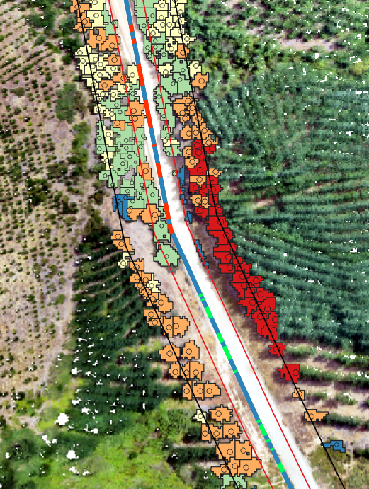

Ingeniero Forestal · Estudiante de Magíster en Ciencias Forestales
Desarrollo y aplico herramientas computacionales para estudiar
sistemas forestales y ambientales mediante información espacial,
temporal, espectral y tridimensional.
🌲 Sistemas forestales
🛰️ Teledetección
🤖 Deep Learning
💧 Modelación hidrológica
🌱 Fenotipado vegetal
3D & LiDAR
Ingeniería Forestal orientada hacia la integración de datos,
modelación, inteligencia artificial y tecnologías de observación
para estudiar procesos forestales y ambientales.
¿Qué me interesa?
Mi interés se encuentra en desarrollar métodos que permitan
transformar datos complejos en información útil para la
investigación y gestión de recursos naturales.
Trabajo con datos provenientes de sensores remotos,
imágenes, nubes de puntos, series temporales y modelos
tridimensionales.
Una parte importante de mi proyección está enfocada en
integrar aprendizaje automático y deep learning con datos
espaciales, temporales y espectrales.
Mi enfoque
Mi objetivo es conectar distintas fuentes de información
mediante modelos computacionales para resolver problemas
forestales y ambientales.
Datos espaciales
Datos temporales
Información espectral
Nubes de puntos y datos 3D
Machine Learning y Deep Learning
Líneas de trabajo
Cinco áreas que convergen en un mismo enfoque:
utilizar datos y modelos computacionales para comprender,
estimar y predecir sistemas forestales y ambientales.
01
Modelación hidrológica
Simulación de caudales y procesos hidrológicos mediante
modelos conceptuales, distribuidos y herramientas de
análisis espacial.
02
IA y modelación espacio-temporal
Uso de machine learning y deep learning para estimar
variables ambientales y desarrollar modelos capaces de
trabajar con información espacial y temporal.
03
Teledetección e imágenes
Análisis de imágenes RGB, multiespectrales e hiperespectrales
para estudiar vegetación, estrés, enfermedades y variables
biofísicas.
04
LiDAR y estructura forestal 3D
Procesamiento de nubes de puntos provenientes de UAV y TLS
para caracterizar árboles individuales, copas, troncos,
ramas y estructura forestal.
05
Fenotipado y reconstrucción 3D
Reconstrucción tridimensional y extracción automatizada de
características morfológicas y estructurales de plantas.
06
Análisis forestal
Aplicación de información espacial y tecnologías digitales
a problemas de silvicultura, dendrometría, monitoreo y
gestión de recursos forestales.
Métodos y tecnologías
Herramientas que forman parte de mi formación, experiencia e
intereses de desarrollo.
🤖 Machine Learning & Deep Learning
Modelos para clasificación, regresión, predicción y análisis
de información espacial y temporal.
XGBoost
LSTM
GRU
CNN
3D-CNN
ConvLSTM
U-Net
YOLO
🛰️ Teledetección
Información obtenida mediante sensores satelitales, cámaras
y sistemas LiDAR para caracterizar vegetación y territorio.
Sentinel-2
MODIS
RGB
Multiespectral
Hiperespectral
LiDAR UAV
TLS
💧 Modelación hidrológica
Modelación de respuesta hidrológica y simulación de caudales
en cuencas hidrográficas.
SRM
GRxJ
CemaNeige
SWAT
QSWAT
HBV
SAC-SMA
🌲 Reconstrucción y análisis 3D
Reconstrucción de plantas y árboles mediante imágenes y
nubes de puntos, seguida de análisis estructural y
cuantificación.
SfM
MVS
NeRF
3D Gaussian Splatting
TreeQSM
CHM
Point Clouds
¿Qué tipo de problemas puedo abordar?
Mi enfoque se basa en construir flujos de trabajo completos,
desde la adquisición de datos hasta la generación de una
variable, clasificación, predicción o representación 3D.
💧 Predicción hidrológica
Clima
→
Cuenca
→
Modelo
→
Caudal
Desde modelos hidrológicos tradicionales hasta enfoques
basados en aprendizaje automático para estimación y
predicción de caudales.
🛰️ Modelación espacio-temporal
Raster
→
Tiempo
→
ConvLSTM
→
Raster futuro
Desarrollo de modelos orientados a trabajar directamente
con información espacial y temporal, manteniendo la
distribución espacial de las variables.
🌱 Información hiperespectral
HSI
→
3D-CNN
→
Clasificación
Análisis simultáneo de información espacial y espectral para
estudiar condiciones fisiológicas, estrés o enfermedades
en plantas.
🌲 Fenotipado 3D
Fotografías
→
SfM/MVS
→
3D
→
Fenotipo
Reconstrucción tridimensional de plantas y extracción
automática de características morfológicas y estructurales.
Proyectos
Una selección de trabajos, desarrollos y líneas de investigación
que forman parte de mi trayectoria y proyección.
Proyecto 01 · Hidrología
Modelación hidrológica de cuencas
Aplicación y evaluación de modelos hidrológicos para simular
caudales y estudiar la respuesta de cuencas ante variables
meteorológicas, nieve y procesos de escorrentía.
Uso de imágenes y reconstrucciones 3D para caracterizar
estructuras vegetales y obtener variables morfológicas,
arquitectónicas y biométricas.
Visión computacional · 3D · Segmentación · Morfometría
Proyecto 04 · LiDAR
Análisis de vegetación mediante LiDAR

Procesamiento y análisis de datos LiDAR para caracterizar la
vegetación presente en torno a redes eléctricas y transformar la
información tridimensional en variables de interés para la gestión
de infraestructura.
A partir de las nubes de puntos es posible estimar altura de la
vegetación, densidad de ocupación, cantidad aproximada de árboles,
proximidad a las líneas eléctricas, sectores prioritarios y
potenciales plazos de intervención.
LiDAR · Nubes de puntos · CHM · Gestión de vegetación ·
Análisis espacial
Línea de desarrollo · IA
Aprendizaje automático para variables ambientales
Exploración de modelos como LSTM, GRU y XGBoost para estimar
variables de interés a partir de información climática,
hidrológica y ambiental.
LSTM · GRU · XGBoost · Series temporales
Línea de desarrollo · Teledetección
Predicción espacio-temporal con imágenes
Desarrollo de flujos orientados a utilizar variables
ambientales representadas como raster para modelar su
evolución espacial y temporal.
Raster · Sentinel-2 · MODIS · CNN · ConvLSTM
Línea de desarrollo · Hiperespectral
Detección de estrés y condición vegetal
Investigación del uso de información hiperespectral y redes
neuronales para clasificar condiciones fisiológicas de
plantas, incluyendo estrés hídrico.
Hiperespectral · 3D-CNN · Clasificación
Línea de desarrollo · 3D vegetal
Fenotipado estructural automatizado
Proyección de métodos para identificar y cuantificar
estructuras vegetales como hojas, tallos, ramas y flores
directamente sobre modelos tridimensionales.
3D · Segmentación · Deep Learning · Morfometría
Reconstrucción 3D
Ejemplos de reconstrucciones tridimensionales obtenidas a partir
de imágenes mediante diferentes etapas del procesamiento
fotogramétrico y métodos de representación 3D.
Estimación de la geometría de la escena y de la posición
de las cámaras a partir de fotografías con solapamiento,
generando una nube de puntos dispersa.
Representación tridimensional basada en gaussianas
tridimensionales que permite generar visualizaciones
detalladas de plantas desde diferentes puntos de vista.
Representación de la estructura espacial obtenida a partir
de una reconstrucción tridimensional de la planta.
Publicaciones
Trabajos científicos y resultados asociados a las líneas de
investigación desarrolladas.
Modelación hidrológica mediante SRM y modelos GRxJ
Trabajo relacionado con la aplicación y evaluación de modelos
hidrológicos para la simulación de caudales y procesos asociados
a la respuesta hidrológica de cuencas.